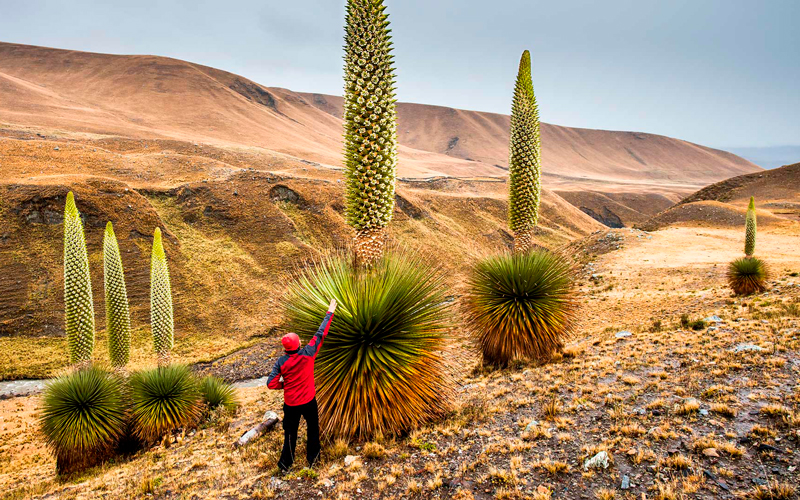
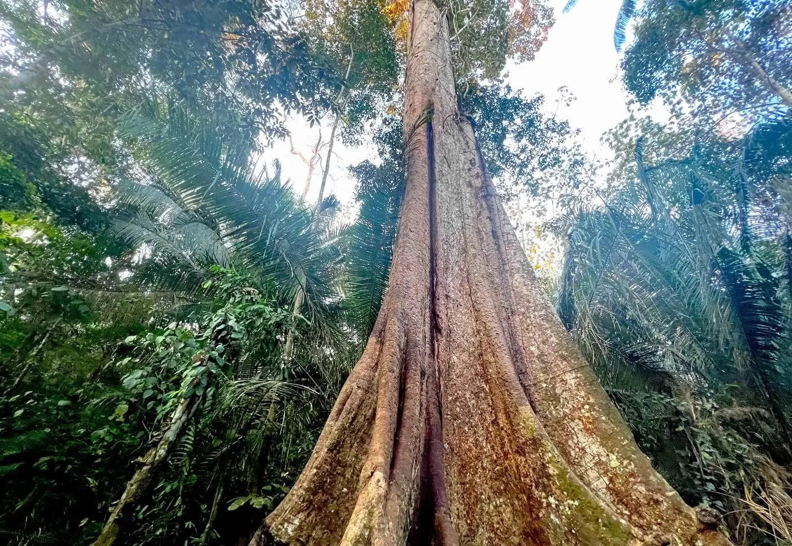
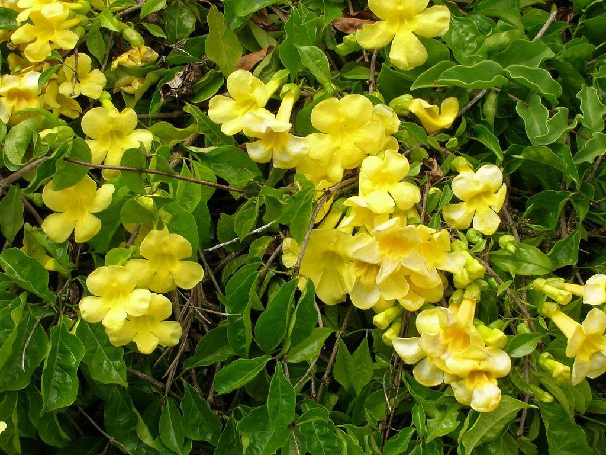
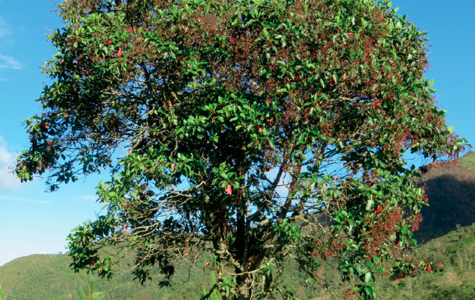
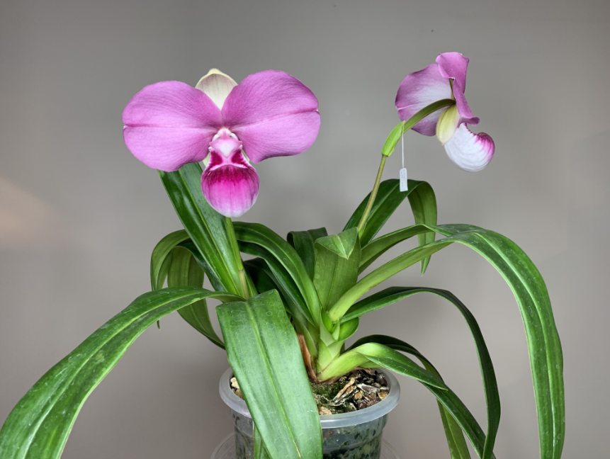
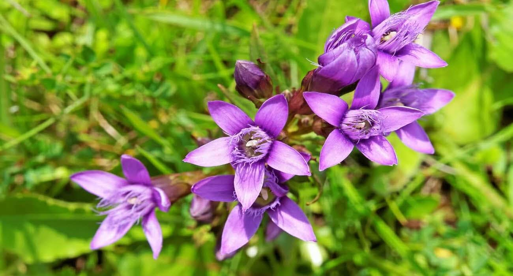
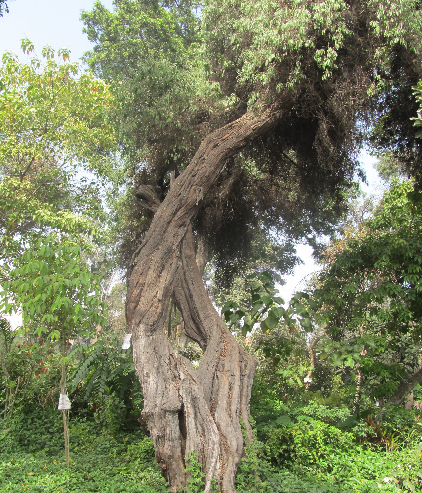
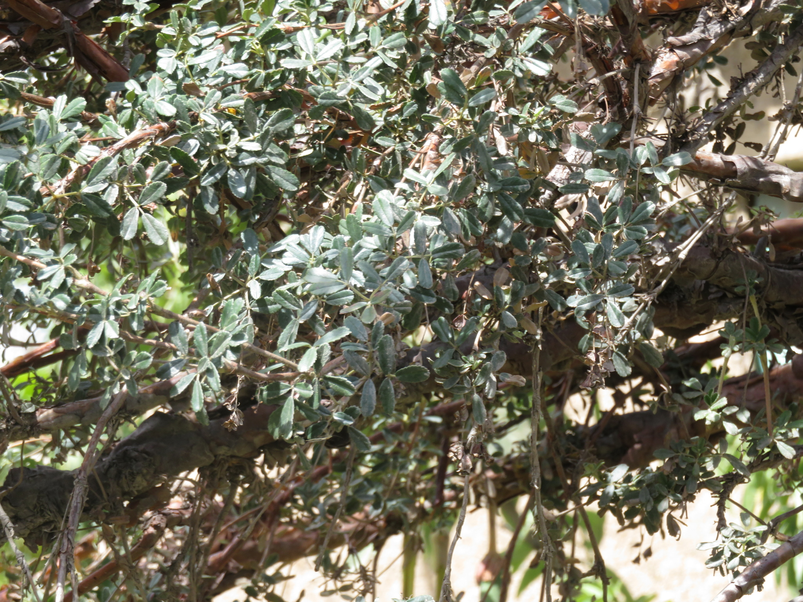
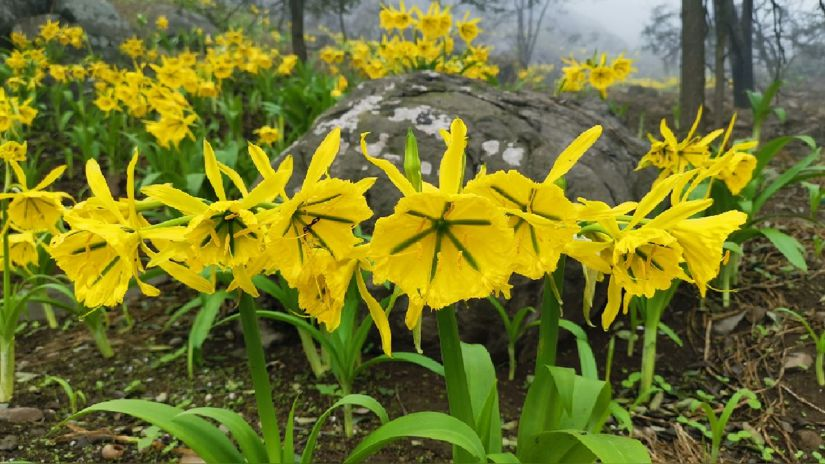
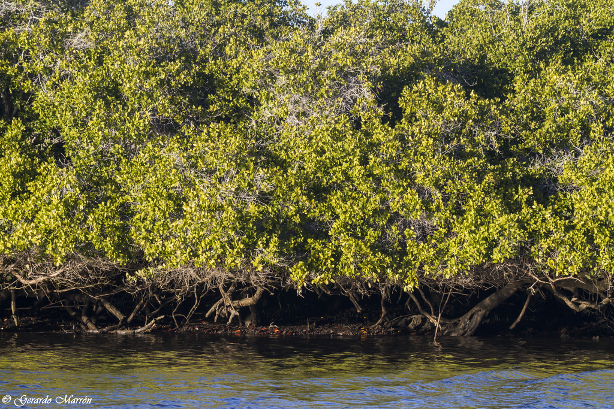

La Flora en Peligro en Perú
La flora peruana, una de las más diversas del mundo, enfrenta graves amenazas de extinción. La deforestación, el cambio climático y la actividad humana ponen en riesgo numerosas especies vegetales únicas. En próximas secciones, exploraremos algunas de estas especies en peligro, revelando la crítica necesidad de conservación de la biodiversidad peruana.
Especies de Flora en Peligro
Puya Raimondi (Puya Raimondii)
Región: Andes
La puya es una planta endémica de Perú que se desarrolla a altitudes de entre 3.200 y 4.800 metros sobre el nivel del mar. Su parte vegetativa puede medir hasta 4 metros y, junto con su racimo (o inflorescencia), puede llegar a los 12 metros de altura. Es de la misma familia que la piña y recibe ese nombre por las púas (o "puyas") que sobresalen de sus racimos. Puede llegar a vivir 100 años y es solo justo antes de su muerte cuando suelta sus semillas.
Caoba (Swietenia macrophylla)
Región: Amazonía
La caoba es un árbol tropical apreciado por su madera de color rojizo intenso y vetas oscuras. Originaria de las selvas americanas, su madera es duradera, fácil de trabajar y se utiliza en la fabricación de muebles finos, instrumentos musicales y otros productos de alta calidad. Sin embargo, debido a la sobreexplotación, muchas especies de caoba están en peligro de extinción.
Uña de Gato (Uncaria tomentosa)
Región: Amazonía
La uña de gato es una planta trepadora de la Amazonía, conocida por sus propiedades medicinales. Sus tallos contienen una resina utilizada para preparar infusiones. Es valorada por sus efectos antiinflamatorios y estimulantes del sistema inmunológico. Se emplea para tratar diversas afecciones, como la artritis. Sin embargo, es importante consultar a un médico antes de consumirla.
Quina (Cinchona officinalis)
Región: Amazonía
La quina (Cinchona officinalis), árbol emblemático del Perú y símbolo en el Escudo Nacional, es nativa de los Andes. Su corteza, rica en quinina, fue esencial en el tratamiento de la malaria, destacando su valor medicinal y cultural. Este árbol representa la biodiversidad y la importancia histórica de los recursos naturales peruanos.
Orquídea “Zapatito”
Región: Amazonía
La orquídea Zapatito (Phragmipedium caudatum), nativa de los Andes peruanos, es famosa por la elegancia de sus flores, que presentan pétalos largos y curvados como cintas. Es una de las orquídeas más representativas del Perú, simbolizando la increíble biodiversidad del país y la belleza de sus ecosistemas.
Hercampuri (Gentianella alborosea)
Región: Andes
El hercampuri (Gentianella alborosea) es una planta medicinal originaria de los Andes peruanos, conocida por sus propiedades depurativas, digestivas y hepáticas. Tradicionalmente se usa para tratar afecciones del hígado y mejorar la circulación. Es un valioso recurso de la medicina natural peruana, apreciado por sus beneficios para la salud.
Carzo (Haplorhus peruviana)
Región: Andes
El carzo es otra especie más que está en peligro crítico de extinción. La tala para la obtención de madera, así como la reciente deforestación para aumentar la cantidad de cultivos, ha provocado que su distribución esté restringida únicamente al Valle de Cinto, en el sur del Perú.
Queñoa (Polylepis racemosa)
Región: Andes
La queñoa crece a altitudes muy elevadas (más de 3.200 metros) en el bosque húmedo de montaña. Su población se ha visto mermada por su quema y tala, pero es una buena candidata para la reforestación, ya que presenta un crecimiento bastante rápido y una buena adaptación. A modo de curiosidad, es el árbol que puede sobrevivir a mayor altura en el mundo.
Flor de Amancaes (Ismene amancaes)
Región: Costa
La Flor de Amancaes es una hierba que crece en las costas peruanas entre piedras y neblinas de la época fría. Su hoja es de color verde intenso y flores amarillas con el interior verdoso. Esta planta solo crece una vez al año y su tiempo de vida es de 2 a 4 días, su existencia en el mundo se está viendo muy amenazada.
Mangle blanco (Laguncularia racemosa)
Región: Costa Norte
Esta especie puede crecer en forma de arbusto o de árbol con una altura de entre 12 a 18 m. El mangle blanco se caracteriza por tener ramas largas, las cuales se entrelazan con sus raíces externas, formando los conocidos manglares presentes en estuarios y zonas costeras de latitudes tropicales. La modificación del curso natural de los cuerpos de agua representa un serio riesgo para esta especie.
